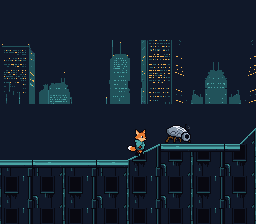

|
OpenSNES
Modern Open-Source SNES Development SDK
|
|
OpenSNES
Modern Open-Source SNES Development SDK
|
A scrolling platformer that combines the map engine (tile-based world scrolling) with the object engine (entity management with physics and collision). Kit, the fox-kit courier, walks over the rooftops of the city at night: flat roofs, ramps he walks up and down, vents to jump over, and the security machines (robot insects and patrol automatons) that walk back and forth. This example demonstrates how real SNES games organize their world and entity logic.

The SNES PPU renders backgrounds from tilemaps in VRAM, but it has no built-in concept of "solid ground." The map engine bridges this gap by maintaining a collision attribute table (tilesetatt / .b16 file) that marks each tile as solid, passable, hazardous — or a slope. When objCollidMapWithSlopes() is called, it checks the object's position against this table and adjusts velocity accordingly – stopping downward movement when standing on a solid tile, for example. A slope tile (T_SLOPEU1 … T_SLOPEUD2 in map.h) is not a wall: walking into one lifts Kit to the surface height for his position inside the tile. The level has both shapes the engine knows: 45-degree ramps (one tile per row) and 22.5-degree ramps (two tiles per row, T_SLOPELU2 then T_SLOPEUU2 going up). objCollidMap() is the same routine without the slopes; the machines here patrol flat stretches and need neither. Kit's box is 14 pixels wide from x + 1 (width = 14, xofs = 1), as in PVSnesLib's slope example: with 16 the box does not follow a slope correctly (observed; the cause is not traced). The level is 1728 pixels wide (216 tiles of 8); the map engine streams it into a 64x32 tilemap at VRAM $6800 (SC_64x32) as the camera moves.
The object engine manages a pool of game entities. Each object type registers two callbacks: an init function and an update function. These callbacks are registered from C with objInitFunctions(), which takes the callbacks as far pointers (24-bit: 16-bit address + bank byte), so a type's code may live in any bank. Each frame, objUpdateAll() iterates over all active objects, loads their state into objWorkspace, and calls their update function.
Unlike static sprite allocation where tiles live at fixed VRAM addresses, the dynamic sprite engine (oamDynamicInit, oamDynamicDraw) uploads only the tiles that are visible each frame. This is essential when you have multiple animated characters, since SNES OBJ VRAM is limited to 32 KB. Sprite graphics are stored in ROM and streamed to VRAM as needed during VBlank — the NMI handler auto-flushes the VRAM tile queue, so the main loop just calls oamDynamicDraw(id) per sprite. Every character here is a 32x32 frame drawn around a 16x16 collision box, so his feet are the box's bottom (Kit 8 pixels left and 14 up of it).
| Button | Action |
|---|---|
| D-Pad Left/Right | Walk |
| A | Jump |
| Up + A | High jump |
The tileset is loaded to VRAM $2000, and the tilemap pointer is set to $6800 with a 64x32 tile layout. The dynamic sprite engine streams 32x32 frames (OBJ_SIZE16_L32) into its large pool at VRAM $0000; it never draws a small sprite here, so its small pool at $1000 holds the far towers of BG2 instead, scrolled at a quarter of the camera's speed.
Each object type (Kit = 0, robot insect = 1, patrol automaton = 2) registers its init and update functions; a C function pointer carries its bank, so this is plain C:
The objects are stored in a .o16 file (x, y, type, patrol x min, patrol x max per object). The object engine parses it, calling each type's init function to spawn entities at their map positions:
Every frame: update the map scroll state, update all objects (physics + AI), wait for VBlank, then let mapVblank() flush tilemap changes. The NMI handler auto-flushes the dynamic sprite engine.
Each machine patrols between its xmin and xmax, turning at each end (its sheet faces right, so it is mirrored walking left), and steps through four walk frames, one every 6 frames. Screen position is computed by subtracting the camera scroll (mapGetCameraX(), mapGetCameraY()):
The two machines share one palette, OBJ palette 1 (OBJ_PAL(1)); Kit has palette 0.
devtools/art_assets/build.py writes the level from the art in assets/neo-lumen/ (generated for OpenSNES, CC0): the roof's neon strip and the wall of windows are sampled from a generated rooftop, the six slope shapes and the vents are drawn by the script, and the map is laid out from a list of flats, ramps and vents. It writes res/tiles.png, res/BG1.m16, res/level.t16 (each tile's VRAM tile), res/level.b16 (each tile's T_SOLID, T_SLOPE* or empty) and res/level.o16. testing/manifests/playthrough_platform_objects.toml walks the whole level with four jumps.
Then open platform_objects.sfc in luna (luna-gui platform_objects.sfc) or any emulator. Walk right: jump the first vent with A, then walk up the ramp to the first robot insect.
console, sprite, sprite_dynamic, sprite_lut, dma, input, background, map, object (LIB_MODULES in the Makefile).